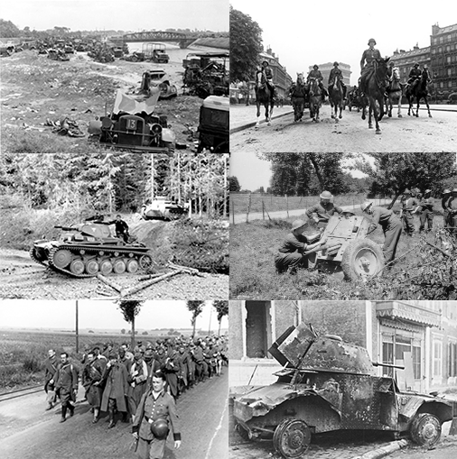

| Niemiecka ofensywa na Francję połączona z agresją III Rzeszy
na Belgię, Holandię i Luksemburg przy złamaniu neutralności tych państw. Ofensywa rozpoczęta 10 maja
1940 roku kończyła definitywnie okres dziwnej wojny na froncie zachodnim. Niemcom skutecznie udało
się zrealizować ideę blitzkriegu, w konsekwencji 22 czerwca Francja podpisała rozejm w Compiègne.
Kampania była walnym zwycięstwem III Rzeszy nad Francją. Doprowadziła do wyłączenia Francji
(wraz z koloniami i marynarką wojenną) – poprzez warunki zawieszenia broni – z koalicji antyniemieckiej,
czasowej izolacji Wielkiej Brytanii na kontynencie i oddania zasobów materialnych Francji dla potrzeb
gospodarki wojennej III Rzeszy.
|

Zdjęcia z ofensywy na Francję, 1940
|